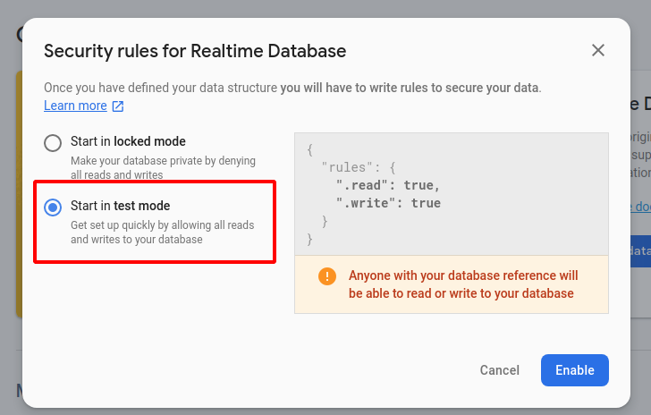

What will we see today?
NodeJS
We will first need to download NodeJS as our JavaScript runtime server to be able to write the logic of our bot.
Telegram Bots
Of course...
Telegram Bot API for NodeJS
This an API wrapper around Telegram's HTTP-based interface.
Firebase
Will be our real-time database to store our information and data.
Heroku
Need to deploy the bot somewhere, right? Well, it better be fast and cheap.
Node is a runtime for JavaScript to run out of the browser, built with Google Chrome's V8 engine. NPM is Node's Package Manager.
Or you can use the following instructions:
If you're using Ubuntu/Debian
curl -sL https://deb.nodesource.com/setup_12.x | sudo -E bash -
&&
sudo apt install -y nodejsIf you're using MacOS download the installer here.
On Windows (shame on you) download the installer here.
We will be using a Telegram bot, of course. But for that, you'll have to first create one!
Visit t.me/botfather and follow instructions to create a new bot.
- Create a new bot
- Give it a (non-unique) name
- Now give it a unique username that ends with bot. The part in red is your bot's ID. Save it as we will use it later.
Telegram bot's API uses a http interface to interact with the bots.
Let's fetch all actions from our bot
Visit your bot's Updates page
Go to https://api.telegram.org/bot<TOKEN>/getUpdates
<TOKEN> is your newly created Token from the previous step.
Text your bot and check the results by refreshing
Go talk to your new bot and say ‘Hello'... Don't be shy!
After that refresh the updates page.
Make your bot send you a message
You could make your bot talk to you for the first with:
https://api.telegram.org/bot<TOKEN>/sendMessage?chat_id=<YOUR_ID>&text=Hola%20mundo!
Where <TOKEN> is your Telegram's token and <YOUR_ID> can be found from the Updates page from the latter step. You can find the example below:
We will be using github.com/yagop/node-telegram-bot-api as our API wrapper. Create a new directory and install the NPM package with the following command:
mkdir newBot
cd newBot
npm install --save node-telegram-bot-apiNow let's check if it's working.
- Create a new file in the folder and call it
index.js - Copy and paste the following code
const TelegramBot = require('node-telegram-bot-api');
// replace the value below with the Telegram token you receive from @BotFather
const token = 'TELEGRAM_BOT_TOKEN';
const options = {
/* webHook: {
port: process.env.PORT,
} */
// to run local node, comment webhook and uncomment polling
polling: true
};
// Create a bot that uses 'polling' to fetch new updates
const bot = new TelegramBot(token, options);
bot.onText(/hola/, (msg) => {
// 'msg' is the received Message from Telegram
const chatId = msg.chat.id;
// send back a message with the name of the user
bot.sendMessage(chatId, "Hola " + msg.from.first_name);
});- Change your
YOUR_TELEGRAM_BOT_TOKENwith the token you created in step 3. - Open a Terminal, go to the folder you just created and execute the NodeJS server with
node index.jsCreate a Firebase
Create a project
Give it a cool name
Disable Google Analytics
Firebase has different configurations for different platforms as Web, Android or iOS. We will use Web configuration's values. For that, let's create a Web project.
Create a Web project
Give your App a very unique app ID
3. Now... Stop!
We will be needing Firebase configuration for the next step... For now, you just have to go to the next step :)
Let's add Firebase to NPM
For that, go back to the terminal (be sure you're in the project folder) and install Firebase
npm install --save firebaseAdd Firebase Database to your project
Add this to the top of your code for Firebase support. Change <YOUR_FIREBASE_CONFIG> with your config from the previous step.
var firebase = require('firebase/app');
require('firebase/database');
var firebaseConfig = {
<YOUR_FIREBASE_CONFIG>
};
firebase.initializeApp(firebaseConfig);
var database = firebase.database();Now let's create a new entry in the database
This is a sample code for creating a new user. Add it to the end of the file
bot.onText(/\/new_user/, (msg) => {
const user_id = msg.from.id;
const user_name = msg.from.first_name;
const creation_date = new Date();
database.ref('/users/' + user_id).set({
name: user_name,
date: creation_date.getTime()
});
bot.sendMessage(msg.chat.id, "User " + user_name + " added to the database.");
})Enable Firebase's Real Time Database
Go to the Database page
Create a Real Time Database

And, finally, choose ‘Test mode' to enable reading and writing to the database.

Check that your Database is working
For that, we'll have to go back to the terminal and run the server with
node index.jsGo to your Telegram bot and try your newly created /new_user command... Et voilá!
Let's try to fetch the users from the database
Before we move forward, you need to cancel your server with Ctrl-C.
Add this to the end of your code.
bot.onText(/\/get_users/, (msg) => {
let message = "";
database.ref('/users/').once('value').then(snapshot => {
snapshot.forEach(id_usuario => {
message += "Usuario: " + id_usuario.val().name + '\n';
})
bot.sendMessage(msg.chat.id, message);
})
})And now go try it out!
to the next step, your code should look like this
var firebase = require('firebase/app');
require('firebase/database');
var firebaseConfig = {
<YOUR_FIREBASE_CONFIG>
};
firebase.initializeApp(firebaseConfig);
var database = firebase.database();
const TelegramBot = require('node-telegram-bot-api');
// replace the value below with the Telegram token you receive from @BotFather
const token = '<YOUR_TOKEN>';
const options = {
/* webHook: {
port: process.env.PORT,
} */
// to run local node, comment webhook and uncomment polling
polling: true
};
// Create a bot that uses 'polling' to fetch new updates
const bot = new TelegramBot(token, options);
bot.onText(/hola/, (msg) => {
// 'msg' is the received Message from Telegram
const chatId = msg.chat.id;
// send back a message with the name of the user
bot.sendMessage(chatId, "Hola " + msg.from.first_name);
});
bot.onText(/\/new_user/, (msg) => {
const user_id = msg.from.id;
const user_name = msg.from.first_name;
const creation_date = new Date();
database.ref('/users/' + user_id).set({
name: user_name,
date: creation_date.getTime()
});
bot.sendMessage(msg.chat.id, "User " + user_name + " added to the database.");
})
bot.onText(/\/get_users/, (msg) => {
let message = "";
database.ref('/users/').once('value').then(snapshot => {
snapshot.forEach(id_usuario => {
message += "Usuario: " + id_usuario.val().name + '\n';
})
bot.sendMessage(msg.chat.id, message);
})
})Sign up to Heroku's platform
Create a new project
Install Heroku's SDK
Before hosting our Telegram bot using Heroku, we first need to install it, right?
Now that we have Heroku installed, let's deploy our bot and run it on a NodeJS server.
Create a Procfile
First we need to create a Procfile. This is the configuration file for Heroku to know what to do with the code you will upload.
Create a file called Procfile with the following content:
web: node index.jsAdd Heroku configuration to your file
Now, the options variable we carried through step 1 will come into use. To use the code in production you need to comment polling: true line and uncomment the webhook options, as follows:
const options = {
webHook: {
port: process.env.PORT,
}
// to run local node, comment webhook and uncomment polling
//polling: true
};And add Telegram's token as an environment variable by changing the token variable value to the following:
const token = process.env.TELEGRAM_TOKEN || '<YOUR_TOKEN>';Now add your Heroku HTTPs Port as an environment variable as well. You can find <YOUR_HEROKU_PROJECT_ID> at your Heroku project web page under Settings > Domains:
const url = process.env.APP_URL || 'https://<YOUR_HEROKU_PROJECT_ID>.herokuapp.com:443'; Your code should look as follows:
var firebase = require('firebase/app');
require('firebase/database');
var firebaseConfig = {
apiKey: "AI6peOqLUZZlbTQEPp-9ExI2KZEoX5HxKk",
authDomain: "gdg-telegram-bot.firebaseapp.com",
databaseURL: "https://gdg-telegram-bot.firebaseio.com",
projectId: "gdg-telegram-bot",
storageBucket: "gdg-telegram-bot.appspot.com",
messagingSenderId: "91505693154",
appId: "1:76435691244:web:f3aa73e8b8fae633aee649"
};
firebase.initializeApp(firebaseConfig);
var database = firebase.database();
const TelegramBot = require('node-telegram-bot-api');
// replace the value below with the Telegram token you receive from @BotFather
const token = process.env.TELEGRAM_TOKEN || '1094948865:AAENZn3NlkKa3gi3O_TYViUWNm-doBty808';
const url = process.env.APP_URL || 'https://my-second-telegram-bot.herokuapp.com:443';
const options = {
webHook: {
port: process.env.PORT,
}
// to run local node, comment webhook and uncomment polling
//polling: true
};
// Create a bot that uses 'polling' to fetch new updates
const bot = new TelegramBot(token, options);
bot.onText(/hola/, (msg) => {
// 'msg' is the received Message from Telegram
const chatId = msg.chat.id;
// send back a message with the name of the user
bot.sendMessage(chatId, "Hola " + msg.from.first_name);
});
bot.onText(/\/new_user/, (msg) => {
const user_id = msg.from.id;
const user_name = msg.from.first_name;
const creation_date = new Date();
database.ref('/users/' + user_id).set({
name: user_name,
date: creation_date.getTime()
});
bot.sendMessage(msg.chat.id, "User " + user_name + " added to the database.");
})
bot.onText(/\/get_users/, (msg) => {
let message = "";
database.ref('/users/').once('value').then(snapshot => {
snapshot.forEach(id_usuario => {
message += "Usuario: " + id_usuario.val().name + '\n';
})
bot.sendMessage(msg.chat.id, message);
})
})Login to Heroku CLI
Let's go back to the terminal. Again, make sure you're working from the same folder as your project.
Use the following command to login and follow instructions:
heroku loginCreate a Heroku git branch and push your code
Heroku will know about our code by pushing it to a branch controlled by our Heroku project. For that:
npm init //Follow the default instructions here
git init
heroku git:remote -a <YOUR_PROJECT_ID>
git add .
git commit -am "make it better"
git push heroku master
heroku ps:scale web=1Run! Say hi to your bot!
Say ‘hello' and check if it's working
If you want to add a new "feature" you first need to pause the server, debug the code locally and then upload it to Heroku again. Let's follow the steps:
Shutdown all servers
heroku ps:scale web=0Comment the webhook option and uncomment polling
const options = {
/* webHook: {
port: process.env.PORT,
} */
// to run local node, comment webhook and uncomment polling
polling: true
};Add your new feature and test it locally
A "How are you?" message?
Uncomment the webhook option and comment polling
const options = {
webHook: {
port: process.env.PORT,
}
// to run local node, comment webhook and uncomment polling
//polling: true
};Commit your changes and push them to your heroku branch
git add .
git commit -am "new feature"
git push heroku masterNow, turn back on the server
heroku ps:scale web=1